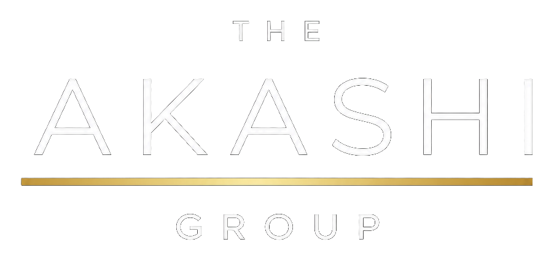

Custom App Builds
Purpose-built web apps and internal tools shaped around a real workflow — not a generic platform your team has to work around.

Custom apps, automation, and digital operating systems
Bridging ideas, intelligent systems, and everyday work.
We turn scattered processes, promising concepts, and unfinished workflows into elegant tools people actually use.
What we help with
Purpose-built web apps and internal tools shaped around a real workflow — not a generic platform your team has to work around.
Connect the handoffs, data entry, and approvals that slow teams down so the work moves without extra coordination.
A clear path from the problem in front of you to the system you need next — including what to build, what to wait on, and what has to be secure.
Production polish, positioning, and release support so a working product can meet real users with confidence.
The missing middle
Everyone is experimenting with AI, automating workflows, and building tools for themselves. The harder question is whether the system has a full 360-degree view of what real operations require: security, compliance, data ownership, role-based access, audit trails, approvals, and the handoffs people depend on every day.
That kind of architecture takes perspective. Let us be the bridge, so you can keep building the dream.
Protect the people, data, and business logic behind the workflow.
Design processes with the right controls, records, and accountability.
Give each role the right permissions without exposing what they do not need.
Build tools that survive handoffs, growth, and real customer use.
The Akashi Group is built for founders, teams, and operators who want useful technology without the noise. The work is direct: define the problem, shape the tool, launch the thing, and keep it moving.
App shelf
Products in development for operators, client delivery, and clearer day-to-day decisions. Request an update on any of them.
A command center for tracking work, documents, client updates, and the next operational step.
Request an updateA portal for client intake, files, communication, and straightforward service delivery.
Request an updateA dashboard that turns day-to-day activity into clearer decisions for operators and teams.
Request an updateWho we work with
Turn a promising concept into a first product that can actually stand.
Replace scattered processes and handoffs with a system the team can run.
Move from internal experiments to tools with access, records, and continuity.
Start a conversation
Tell us about the process, product, or workflow you want to improve. We'll help you shape it into a tool people can actually use.